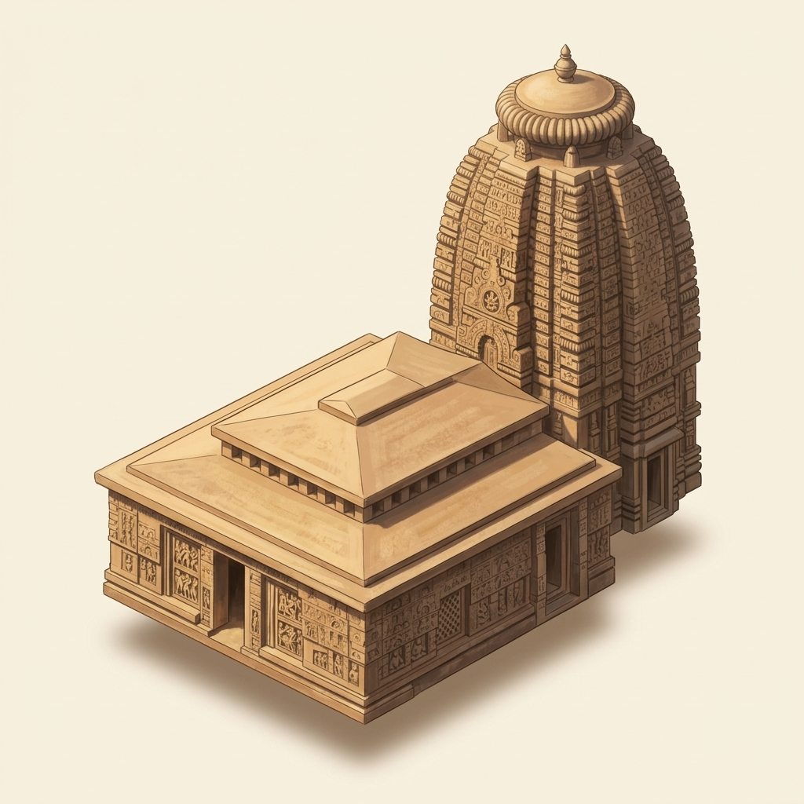

Parasuramesvara Temple
c. 7th–8th century CE (debated)
A small but richly carved temple, and one of the oldest still standing in Bhubaneswar. Scholarly view: the consensus of scholars from stylistic or indirect evidence, or a single accepted source. [1,3,5]
Note: Brown and Fergusson each call it the oldest temple of Bhubaneswar; Brown says he judges 'mainly from its appearance'. Panigrahi dates the ruined Satrughnesvara earlier, so 'one of the oldest' is used.
- Dynasty
-
Shailodbhava period (debated)
Debated: sources disagree, or this rests on tradition or an estimate. See the note for the competing views.
[3,5]
Note: This rests on Panigrahi's own date of about 650 CE, which other scholars dispute (see date). Fergusson (1876) suggested it 'may belong to the preceding dynasty', before his Kesari kings. No source names the person who paid for it.
- Date
-
c. 7th–8th century CE (debated)
Debated: sources disagree, or this rests on tradition or an estimate. See the note for the competing views.
[3,1,4,5]
Note: No foundation inscription is known, so every date comes from style or letter shapes. Panigrahi (1961): the first or second part of the 7th century, about 650 CE. Brown (1959): towards the end of the 8th century, from its style and outside influences; he adds that the shrine may have been added after the hall. R.D. Banerji (reported by Panigrahi): not earlier than the 8th century, from the letter shapes of the planet labels on the door. Mitra (1880): 9th century, because its workmanship and stone match the Mukteshvara and Rajarani. Fergusson (1876): about 500 CE, using the traditional Kesari king list; otherwise he would have said 450 CE.
- Height
-
about 13 m (44 ft)
Debated: sources disagree, or this rests on tradition or an estimate. See the note for the competing views.
[1]
Note: Only one height was found in the sources checked: Brown (1959), 44 ft for the tower. He gives 48 ft for the length of shrine and hall together. This is not an ASI measurement. Panigrahi gives no figure, and Fergusson gives only the plan, about 20 ft square. Mitra's description may give a size, but that part could not be read. Other figures circulate, but their sources were not checked.
- Deity
-
Debated: Shiva or Vishnu
Debated: sources disagree, or this rests on tradition or an estimate. See the note for the competing views.
[3,4,5]
Note: Panigrahi (1961) notes carvings of scenes from Shiva's life. Mitra (1880) reports that the Ekamra Purana calls its god Daityesvara, and he reads some porch panels as scenes from Rama's life. Fergusson (1876) judged it Vaishnava from its name and wall carvings. No source checked says outright which god is worshipped here today.
- Temple type
- Not yet verified — see our content policy.

Parts of this temple
The temple has two parts: a tower shrine (deul) and a porch hall (jagamohana) in front of it. N.K. Bose showed that the base of its wall (pabhaga) has three mouldings. Scholarly view: the consensus of scholars from stylistic or indirect evidence, or a single accepted source. [1,2]
How was it built?
It is built of large stones laid without mortar. Percy Brown explained that the stones stay in place through their weight and balance, helped by interlocking edges. Scholarly view: the consensus of scholars from stylistic or indirect evidence, or a single accepted source. [1]
Panigrahi wrote that this temple was built in the same way as the ruined Satrughnesvara temple. There, a hollow corbelled arch (stones stepped inwards) shows above the doorway. He explained that it kept weight off the stone beams over the door. Scholarly view: the consensus of scholars from stylistic or indirect evidence, or a single accepted source. [3]
Note: Panigrahi notes that N.K. Bose thought the arch took weight off the lintel. Panigrahi disagrees about exactly which part it protects, but both see it as a weight-relieving device.
The temple was repaired in 1903. Panigrahi noted that the repairs disturbed much of the old roof inside the shrine, though its first shape partly survives. Scholarly view: the consensus of scholars from stylistic or indirect evidence, or a single accepted source. [3]
What's special about it?
Its porch hall (jagamohana) is well preserved. It lets scholars study the early form of this hall. A raised central roof and stone windows with carved holes let light in. Scholarly view: the consensus of scholars from stylistic or indirect evidence, or a single accepted source. [3,1,4]
Note: The sources give different numbers of doors for the hall (Panigrahi two, Brown three), so no count is given.
On the shrine doorway is a carved slab of planet gods, with their names inscribed beside them. Panigrahi noted that early temples like this one leave out Ketu, the ninth planet. Later temples such as Mukteshvara include him. Scholarly view: the consensus of scholars from stylistic or indirect evidence, or a single accepted source. [3]
Panigrahi called it the most decorated of the early temples that survive in fair condition. He noted carvings of scenes from Shiva's life. Rajendralala Mitra described rows of horses and elephants carved on the porch hall. Scholarly view: the consensus of scholars from stylistic or indirect evidence, or a single accepted source. [3,4]
Note: Mitra reads the lower porch panels as scenes from Rama's life; Panigrahi speaks of scenes from Shiva's life. They may describe different panels.
Percy Brown described its tower as thick-set and heavy-shouldered, with a very wide ribbed crowning stone. He saw its shape as basic and not yet fully developed. Scholarly view: the consensus of scholars from stylistic or indirect evidence, or a single accepted source. [1]
How big is it?
- Parasuramesvara Temple — about 13 m (44 ft)
- An adult person — about 1.7 m
- A five-storey building — a five-storey building is about 15 m — shown here for scale
About as tall as a five-storey building.
What influenced its design?
Percy Brown saw links with other regions. He compared its tower and raised hall roof with Chalukya temples at Aihole in the Deccan. He linked its carved vase-and-leaf pillar tops to the Gupta style of the north. Scholarly view: the consensus of scholars from stylistic or indirect evidence, or a single accepted source. [1]
Note: Brown suggests only that ideas may have been shared with the Deccan. Mitra (1880) thought the raised hall roof was borrowed instead from Buddhist monastery halls.
Percy Brown called this temple and the Vaital Deul a stone 'primer' (a first lesson book) on how the Odisha style began. Panigrahi noted that later porch halls had only one door and were less well lit inside. Scholarly view: the consensus of scholars from stylistic or indirect evidence, or a single accepted source. [1,3]
Panigrahi found at least two other damaged temples in Bhubaneswar that closely match it. One, the ruined Bharatesvara, has a similar tower and almost the same carvings on its front. Scholarly view: the consensus of scholars from stylistic or indirect evidence, or a single accepted source. [3]
Sources & evidence
- Established: an inscription, excavation, ASI/UNESCO record or primary text states this, and scholars agree. Established: an inscription, excavation, ASI/UNESCO record or primary text states this, and scholars agree.
- Scholarly view: the consensus of scholars from stylistic or indirect evidence, or a single accepted source. Scholarly view: the consensus of scholars from stylistic or indirect evidence, or a single accepted source.
- Debated: sources disagree, or this rests on tradition or an estimate. See the note for the competing views. Debated: sources disagree, or this rests on tradition or an estimate. See the note for the competing views.
- Percy Brown. Indian Architecture (Buddhist and Hindu Periods), D.B. Taraporevala Sons & Co., Bombay (1959). https://archive.org/details/dli.csl.8666 (full text, archived copy)
- Nirmal Kumar Bose. Canons of Orissan Architecture, R. Chatterjee, Calcutta (1932). https://archive.org/details/in.ernet.dli.2015.100340 (full text, archived copy)
- Krishna Chandra Panigrahi. Archaeological Remains at Bhubaneswar, Orient Longmans, Bombay (1961). https://archive.org/details/in.ernet.dli.2015.111041 (full text, archived copy)
- Rajendralala Mitra. The Antiquities of Orissa, Vol. II, W. Newman & Co., Calcutta (published under orders of the Government of India) (1880). https://archive.org/details/in.ernet.dli.2015.44126 (full text, archived copy)
- James Fergusson. History of Indian and Eastern Architecture, John Murray, London (1876). https://archive.org/details/in.ernet.dli.2015.62030 (full text, archived copy)